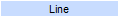
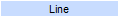

#Create mbr group
#This script will navigate to Group tab and start creating an mbr group
#This script assume that the Java GUI is already running.
#inputs: mbrGroupName=[] selectConfigFile=[] selectLine=[] channelName=[] destinationIp=[] destinationPort=[] totalRate
# mbrGroupName=[default=MBR_Group_1]
# selectConfigFile = [default=SPTS_ATSC_ENCODER, SPTS_DVB_ENCODER, SPTS_PROXY_ENCODER]
# selectLine = [4/1 - 4/9] currently does not support ethernet on different board
# channelName = [default=CH1]
# destinationIp=[default = 236.x.x.x from selectLine]
# destinationPort=[default = 8433]
# totalRate=[default=5.0]
# mbrInfoOutput=[name of the file containing information about the created mbr group]
#Usage: create_mbr_group.sikuli selectLine=[] #default will create MBR_Group_1 with Ch1 @ 5Mbps with output 236.x.x.x:8433
###############################################################
#common code for every sikuli code. Do not remove this section
from me7klib import *
import re
###############################################################
#YOUR code start here
###############################################################
#This is your check for the inputs that you are expecting.
def Check_args():
#checking for required arguments
Check_arg('selectLine')
Set_default_arg('mbrGroupName', 'MBR_Group_1')
Set_default_arg('selectConfigFile', 'SPTS_ATSC_ENCODER')
Set_default_arg('channelName', 'CH1')
Set_default_arg('destinationIp', '236.x.x.x')
Set_default_arg('destinationPort', '8433')
Set_default_arg('totalRate', '5.0')
Set_default_arg('mbrInfoOutput', os.getcwd() + '\\' + 'mbr_outputs.info')
Check_args()
############################################################
#Main program definitions code start from this point
#Any global variables here
Settings.OcrTextSearch=True
Settings.OcrTextRead=True
#Any definitions are here
def Create_MBR_Group():
#First need to navigate to the right tab
#auto_sikuli.exe sikuliScriptName=nav_tabs.sikuli tabName=Groups tabSubname=mbr
Set_arg('tabName', 'Groups')
Set_arg('tabSubName', 'mbr')
RunSikuli('nav_tabs')
#Create MBR Group if it is empty
if exists():
find(); click(); wait()
#Entering mbrGroupName
mygroupname = Get_arg('mbrGroupName')
click(); wait()
#Group name is not edited in build5
#type(mygroupname); click(Pattern("MBRGroupName_label-1.png").targetOffset(188,2))
#Select Config file
myconfigfile = Get_arg('selectConfigFile')
find(); doubleClick()
if myconfigfile.upper() == 'SPTS_ATSC_ENCODER': click()
elif myconfigfile.upper() == 'SPTS_DVB_ENCODER': click()
elif myconfigfile.upper() == 'SPTS_PROXY_ENCODER': click()
else: Exit_program('Invalid selectConfigFile entered: ' + myconfigfile, 2)
#Select line
myline = Get_arg('selectLine')
find(); doubleClick(Pattern().targetOffset(0,30))
if myline == '4/3': click(Pattern().similar(0.80))
elif myline == '4/4': click(Pattern().similar(0.80))
elif myline == '4/5': click(Pattern( ).similar(0.80))
elif myline == '4/6': click(Pattern().similar(0.80))
elif myline == '4/7': click(Pattern().similar(0.80))
elif myline == '4/8': click(Pattern().similar(0.80))
elif myline == '4/9': click(Pattern().similar(0.80))
elif myline == '4/10': click(Pattern().similar(0.80))
else: Exit_program('Invalid selectLine entered: ' + myline, 2)
#Entering channel name
mych = Get_arg('channelName')
find(Pattern().similar(0.80)); doubleClick(Pattern().similar(0.80).targetOffset(0,30)); doubleClick(Pattern().similar(0.80).targetOffset(0,30)); type(mych); type(Key.ENTER)
#Entering destination ip
#First find out what is the ip of the current ethernet line
findtext = find().below(40).text()
my_match = re.search(r'.+\((.+)\)', findtext)
if not my_match:
Exit_program('Failed to read ethernet line.', 1)
else:
myeth = my_match.group(1).replace(' ', '')
Print_debug('Found ethernet line address: ' + myeth )
#extracting the octets
myoctets = myeth.split('.')
if len(myoctets) != 4: Exit_program('Ethernet line is read wrong.')
#Second, get destination address
mydest = Get_arg('destinationIp')
destoctets = mydest.split('.')
if len(destoctets) != 4: Exit_program('destinationIp is not valid: ' + mydest)
if not (int(destoctets[0]) < 255 and int(destoctets[0]) > 224): Exit_program('Invalid destinationIp range is entered: ' + mydest)
for i in xrange(1, len(destoctets)):
destoctets[i] = destoctets[i].replace('x', myoctets[i])
mydest = destoctets[0]+ '.' + destoctets[1] + '.' + destoctets[2] + '.' + destoctets[3]
Print_debug('Final destinationIp: ' + mydest)
find(); doubleClick(Pattern().targetOffset(-60,30)); doubleClick(Pattern().targetOffset(-60,30)); type(mydest); type(Key.ENTER)
#Entering destination port
myport = Get_arg('destinationPort')
find(); doubleClick(Pattern().targetOffset(0,30)); type(myport); type(Key.ENTER)
#Entering total rate
myrate = Get_arg('totalRate')
find(); doubleClick(Pattern().targetOffset(0,30)); doubleClick(Pattern().targetOffset(0,30)); type(myrate); type(Key.ENTER)
#Apply changes
find(); click(Pattern().targetOffset(-36,3))
if exists():
Capture_screen()
find(Pattern(
).similar(0.80))
elif myline == '4/6': click(Pattern().similar(0.80))
elif myline == '4/7': click(Pattern().similar(0.80))
elif myline == '4/8': click(Pattern().similar(0.80))
elif myline == '4/9': click(Pattern().similar(0.80))
elif myline == '4/10': click(Pattern().similar(0.80))
else: Exit_program('Invalid selectLine entered: ' + myline, 2)
#Entering channel name
mych = Get_arg('channelName')
find(Pattern().similar(0.80)); doubleClick(Pattern().similar(0.80).targetOffset(0,30)); doubleClick(Pattern().similar(0.80).targetOffset(0,30)); type(mych); type(Key.ENTER)
#Entering destination ip
#First find out what is the ip of the current ethernet line
findtext = find().below(40).text()
my_match = re.search(r'.+\((.+)\)', findtext)
if not my_match:
Exit_program('Failed to read ethernet line.', 1)
else:
myeth = my_match.group(1).replace(' ', '')
Print_debug('Found ethernet line address: ' + myeth )
#extracting the octets
myoctets = myeth.split('.')
if len(myoctets) != 4: Exit_program('Ethernet line is read wrong.')
#Second, get destination address
mydest = Get_arg('destinationIp')
destoctets = mydest.split('.')
if len(destoctets) != 4: Exit_program('destinationIp is not valid: ' + mydest)
if not (int(destoctets[0]) < 255 and int(destoctets[0]) > 224): Exit_program('Invalid destinationIp range is entered: ' + mydest)
for i in xrange(1, len(destoctets)):
destoctets[i] = destoctets[i].replace('x', myoctets[i])
mydest = destoctets[0]+ '.' + destoctets[1] + '.' + destoctets[2] + '.' + destoctets[3]
Print_debug('Final destinationIp: ' + mydest)
find(); doubleClick(Pattern().targetOffset(-60,30)); doubleClick(Pattern().targetOffset(-60,30)); type(mydest); type(Key.ENTER)
#Entering destination port
myport = Get_arg('destinationPort')
find(); doubleClick(Pattern().targetOffset(0,30)); type(myport); type(Key.ENTER)
#Entering total rate
myrate = Get_arg('totalRate')
find(); doubleClick(Pattern().targetOffset(0,30)); doubleClick(Pattern().targetOffset(0,30)); type(myrate); type(Key.ENTER)
#Apply changes
find(); click(Pattern().targetOffset(-36,3))
if exists():
Capture_screen()
find(Pattern( ).similar(0.80)); click(Pattern().similar(0.80))
find(); click(Pattern().targetOffset(39,1))
Exit_program('Failed to create MBR Group: ' + mygroupname)
else:
Print_debug('MBR Group created successfully: ' + mygroupname)
#Creating mbr_outputs.info file
mbrfile = Get_arg('mbrInfoOutput')
target = open(mbrfile, 'w')
target.write('mbrGroupName=' + mygroupname + '\n')
target.write('destinationIp=' + mydest + '\n')
target.write('destinationPort=' + myport + '\n')
target.close()
#######################################################
#Main program flow
Create_MBR_Group()
).similar(0.80)); click(Pattern().similar(0.80))
find(); click(Pattern().targetOffset(39,1))
Exit_program('Failed to create MBR Group: ' + mygroupname)
else:
Print_debug('MBR Group created successfully: ' + mygroupname)
#Creating mbr_outputs.info file
mbrfile = Get_arg('mbrInfoOutput')
target = open(mbrfile, 'w')
target.write('mbrGroupName=' + mygroupname + '\n')
target.write('destinationIp=' + mydest + '\n')
target.write('destinationPort=' + myport + '\n')
target.close()
#######################################################
#Main program flow
Create_MBR_Group()